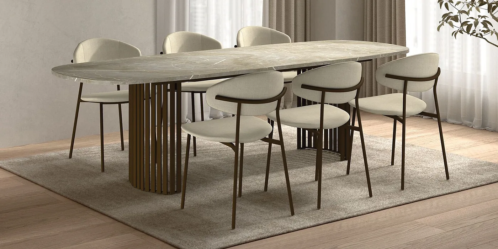
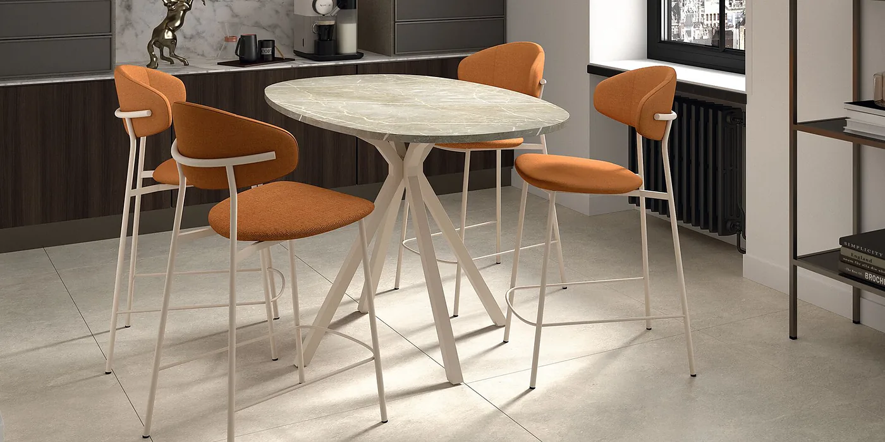
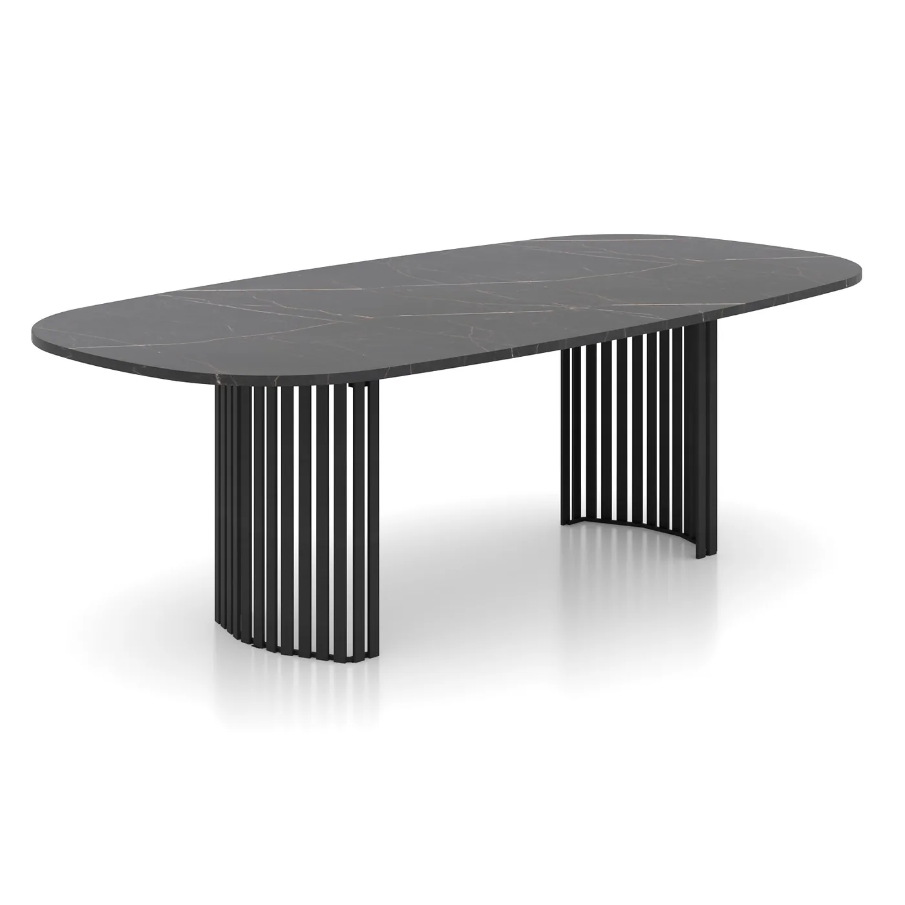
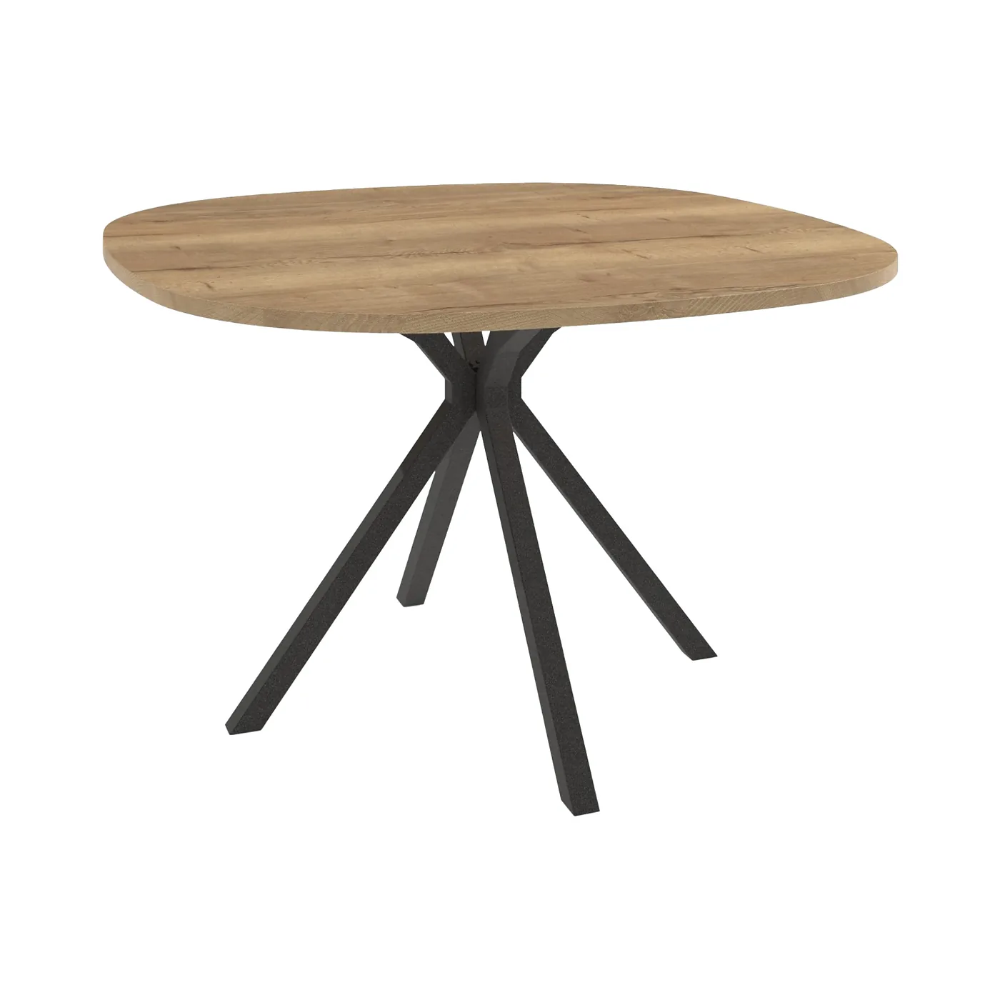

Tables et chaises à composer
Perfecta
Une table dont vous choisissez la forme, les dimensions, le plateau et le pied, avec les chaises qui vont avec. Nous la composons avec vous au magasin.
- Forme et dimensions au choix
- Chaises et tabourets assortis
- Première visite et conseil offerts
Sur commande
Quatre choix pour votre table.
-
La forme
Ronde, ovale, en ellipse, carrée aux angles arrondis ou rectangulaire, selon le modèle. Certaines versions ont une allonge.
-
La hauteur
Hauteur de table, autour de 75 cm, ou hauteur de plan de travail, autour de 90 cm, pour une table haute avec tabourets.
-
Le plateau
En stratifié HPL, en décor Halifax ou en mélaminé, dans les coloris du fabricant.
-
Le pied
En acier laqué époxy, dans plusieurs coloris. Chaque modèle a son dessin de pied.
Sur catalogue
Les tables Perfecta.
Canvas et Onyx en photos. Nous proposons aussi Vienna, dans les petits formats : de 80 × 80 à 150 × 90 cm, avec trois versions à allonge (de 80 à 140 cm, de 110 à 183 cm, de 120 à 200 cm).
-

01Canvas
Deux pieds à lamelles en acier. Ovale de 180 × 100 ou 220 × 120 cm, ellipse de 240 × 120 cm, ronde de 140 cm ; une version ovale s’allonge de 180 à 260 cm.
-

02Onyx
Un pied central croisé. Ronde de 100 à 140 cm, ovale de 150 à 220 cm, rectangulaire de 180 ou 200 cm, en hauteur de table ou en table haute.
Autour de la table
Chaises et tabourets Perfecta.
Le pied et le revêtement se choisissent pour s’accorder à la table. Nous proposons aussi la chaise Sunny.
Vos questions
Avant de composer.
Peut-on choisir les dimensions d’une table Perfecta ?
Oui, parmi les formats prévus par le fabricant pour chaque modèle : ronde, ovale, ellipse ou rectangulaire, avec ou sans allonge selon la version.
Les chaises se choisissent-elles avec la table ?
Oui. Perfecta fabrique aussi des chaises et des tabourets de bar : le pied et le revêtement se choisissent pour s’accorder à la table.
Quelle est la garantie ?
Perfecta garantit ses meubles deux ans contre les défauts de fabrication.
Voir aussi
Les autres tables.
-
Akante
Des tables en céramique à rallonge.
Voir les tables Akante -
Cattelan Italia
Des tables en céramique au design affirmé.
Voir les tables Cattelan -
Toutes nos tables
Et les chaises qui vont avec.
Voir la salle à manger
Composons votre table au magasin.
Apportez les dimensions de votre pièce : notre équipe choisit avec vous la forme, le plateau, le pied et les chaises. Parking facile d’accès, avec ou sans rendez-vous.
- Lundi
- 13h30 – 18h30
- Mardi au samedi
- 10h30 – 18h30
- Dimanche
- Fermé
- Téléphone
- 064 46 07 72
- Livraison
- Par nos soins, dans le Hainaut (Binche, La Louvière, Mons, Charleroi…) et la province de Namur
Pour un projet plus loin, ailleurs en Belgique ou à l’étranger : parlons-en.